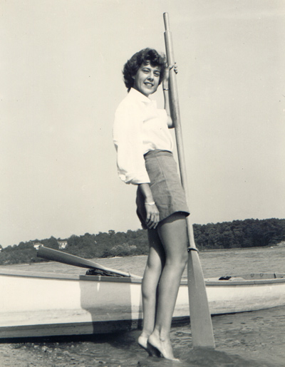
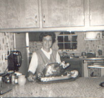
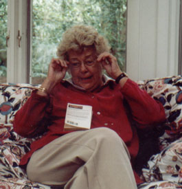

| Ruth Gertrude Thompson was born 2 October 1926 in Baltimore, MD, taking her middle name from her mother. She had an older brother, Howard, whom she insists received the larger share of her family's attentions. She grew up in Severna Park and attended Annapolis High School where she dated Charlie Van Doren, who would later gain infamy cheating on one of the first television game shows. Ruth graduated in 1944. |

|
|

|
On 17 September 1949 she married Frank Marshall in Severna Park, MD, where they subsequently made their home. Ruth taught kindergarten at Jones Elementary School and Woods School. Her firstborn, a son, died as a baby of a brain tumor. Later she had two daughters, Amy and Sally. Ruth also worked for a time as an office manager. In 1992 she lost Frank to emphysema. |
| Then in 1995 Ruth found love again, marrying the widower Basil E.Moore on 29 September. They enjoyed a decade together in Severna Park and leading a very social life and traveling. Ruth loved golf and cardplaying, especially bridge. In the fall of 2004 Ruth was diagnosed with lung cancer, a result of 50 odd years of smoking. She died February 8, 2005. |

|